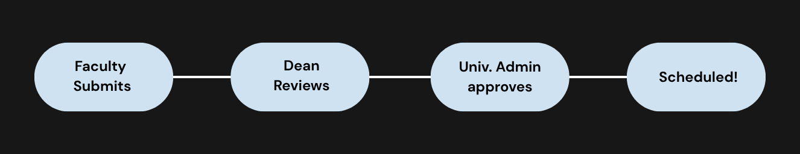

How RoomSync works

1. Find a room
Faculty choose a date and time. Fixed weekly classes block only their scheduled hours, so RoomSync can show rooms free in the gaps. One-time consultations, review sessions, exams, and activities can be requested for an available room. Every request is reviewed by the Dean and then the University Administrator.
2. Conflict check
The system checks the section’s classes and the faculty member’s own schedule.
3. Approval
The Dean reviews first, then the University Administrator. A rejection always comes with a written reason.
4. Scheduled
Once both approve, the makeup class is confirmed. The clerk can print the authorization form.
Questions and answers
How are one-time room requests approved?
Consultations, review sessions, exams, and activities use the same two-step review as makeup classes: the Dean reviews first, followed by the University Administrator. The room is held while a request is pending.
Is the room reserved while my request is pending?
Yes. The room is held so no one else books it, and it is confirmed after both approvals.
What happens if my request is rejected?
You see who rejected it and the reason, and you can submit a new request with a different time or room.
Can a student cancel or approve a makeup class?
No. Students can only view schedules and vote whether they are available. Their vote helps the approvers but does not replace approval.
Who can cancel a scheduled makeup class?
The university clerk can cancel it with a reason. The room becomes free again.
Can I print a makeup class record?
Yes. The clerk opens the record and prints the authorization form with signature lines for the Dean and the University Administrator.